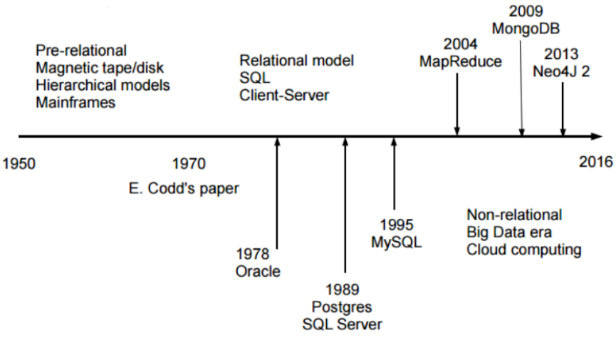
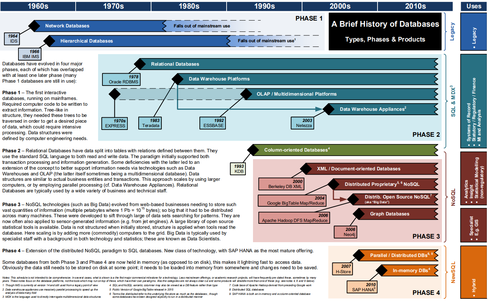

INTRODUÇÃO A BANCOS DE DADOS
Apresentação: Dr. Fábio Leite
BANCO DE DADOS
Banco de dados é uma coleção de dados estruturados e relacionados.
O termo "estruturado" se refere a um formato bem definido e organizado. O SGBD (Sistema de Gerenciamento de Banco de Dados) é o software que permite aos usuários criar e manter essa coleção de dados. A característica "relacionado" é fundamental: os dados devem possuir um significado implícito e lógico, representando fatos conhecidos do "mundo real" que foram registrados.
Embora um banco de dados possa ser teoricamente não-computadorizado, o foco principal é em bancos de dados computadorizados. O SGBD, ao gerenciar esses dados armazenados eletronicamente, utiliza estruturas de armazenamento eficientes e mecanismos de controle para garantir que eles sejam manipulados de forma segura, correta e rápida.
Ele permite o gerenciamento eficiente de grandes volumes de informações, facilitando a inserção, consulta, atualização e remoção de dados.
Estas quatro operações (inserção, consulta, atualização e remoção) são conhecidas coletivamente como as operações básicas de manipulação de dados.
O SGBD facilita essas operações ao fornecer:
- Linguagens de Consulta: Como o SQL, que são de alto nível e fáceis de usar para os usuários finais e programadores.
- Otimização: O SGBD utiliza otimizadores de consulta e índices para garantir que a consulta e a recuperação (busca) dos dados sejam realizadas de forma a minimizar o tempo de resposta, mesmo em grandes volumes.
ELEMENTOS DE UM SGBD
O SGBD lida com diversos Usuários e Programas (os Atores, como o DBA, Designers e Usuários Finais) que acessam o sistema para executar suas requisições.
O ponto central dessa interação é a Consulta (Query). Estas requisições são processadas pelo Processador de Consultas, que tem a função de analisar a sintaxe (geralmente SQL), traduzir e otimizar a solicitação, gerando um plano de execução eficiente para máxima performance na recuperação dos dados. Sendo assim, são tratadas por todos os elementos do SGBD para retornar o que foi requerido.
Para alterações seguras, o SGBD utiliza Transações, que são unidades de execução regidas pelas propriedades ACID: Atomicidade (ou completa, ou desfeita), Consistência (mantém o estado válido), Isolamento (execução independente) e Durabilidade (alterações permanentes). O SGBD garante o cumprimento do ACID por meio de seus módulos de Controle de Concorrência e Recuperação de falhas.
PROJETO DE BANCO DE DADOS
-
Definir um banco de dados envolve especificar:
- Tipos de dados
- Estruturas
- Restrições sobre os dados armazenados
-
Construir um banco de dados é a fase de implementação do esquema, utilizando a Linguagem de Definição de Dados (DDL) para criar a estrutura. Em seguida, os dados são armazenados no meio físico, com o SGBD controlando esses detalhes para abstrair o usuário dos pormenores de armazenamento.
-
Manipular os dados é a execução das operações básicas de Inserção, Remoção, Modificação e Recuperação (Consultas). Essa manipulação é feita através da Linguagem de Manipulação de Dados (DML), permitindo a recuperação da informação (incluindo a geração de relatórios) e garantindo a evolução segura dos dados mantidos por meio de Transações ACID.
Um SGBD provê acesso aos dados de forma:
- Eficiente: O SGBD usa estruturas de armazenamento eficientes e um Otimizador de Consultas para o acesso rápido aos dados.
- Confiável: O sistema impõe Restrições de Integridade e usa subsistemas de Recuperação e Backup para proteger a base contra falhas, garantindo a durabilidade e a validade dos dados.
- Conveniente: O SGBD oferece abstração da visão física e usa linguagens de alto nível (DML) para simplificar a interação do usuário.
- Acesso concorrente e multi-usuários: Esta é uma função vital do SGBD, gerenciada pelo Sistema de Controle de Concorrência para garantir o Isolamento das transações e permitir que múltiplos usuários trabalhem ao mesmo tempo.
- Massiva e persistente: O SGBD é inerentemente projetado para lidar com grandes volumes de dados (massivo) e garantir que as alterações confirmadas sejam permanentes (persistente).
SERVIÇOS DE UM SGBD
Sendo assim, os principais serviços são:
- Persistência
- Segurança
- Backup e recuperação de falhas
- Otimização de consultas
- Logging
- Performance Tunning
- Replicação
- Suporte a aplicações avançadas:
- Data warehouse e mining
- Machine learning
- Business Intelligence
HISTORIA DE SGBDS
A história dos Sistemas Gerenciadores de Banco de Dados (SGBDs) começou na década de 1950 com o ineficiente Processamento de Arquivos individualizados. A necessidade de centralizar dados levou à criação dos primeiros SGBDs de Primeira Geração nos anos 1960 (Modelos Hierárquico e de Rede). A verdadeira revolução veio nos anos 1970 com o Modelo Relacional de E.F. Codd, dando origem aos SGBDs de Segunda Geração, que utilizam tabelas e a linguagem SQL, separando a lógica dos dados do seu armazenamento físico. A evolução continuou com os modelos Objeto-Relacionais nos anos 80/90 (Terceira Geração) e, mais recentemente, com o surgimento dos sistemas NoSQL, que oferecem alta escalabilidade para lidar com o volume e a variedade do Big Data moderno.


CLASSIFICAÇÃO QUANTO AO PROPÓSITO
PRODUÇÃO
- Bancos de dados que armazenam os dados para manter as aplicações e sistemas funcionando.
- É conhecido como Online Transaction Processing (OLTP).
- Podem ser relacionais, NoSQL, Graph DB, entre outros.
ANALÍTICO
- Bancos de dados para análise e apoio à tomada de decisão.
- São Fontes de dados para modelos de ML (Machine Learning).
- Podem ser: Data warehouses, Data Lakes ou Lakehouses.
OPERACIONAL (MONITORAMENTO)
- Bancos de dados montados para provê suporte à aplicações de monitoramento, logs, segurança, entre outros.
- Podem ser: key-value stores, time series, logs + search DBs.
TIPOS DE PLAYERS NO MERCADO
NÍVEIS DE ABSTRAÇÃO
O SGBD utiliza uma arquitetura de três esquemas para garantir a independência de dados, separando as diferentes formas como o banco de dados é visto e implementado.
-
Visões do usuário
- Módulos do sistema: O SGBD permite que cada grupo de usuários (como programadores ou usuários finais) tenha uma visão personalizada do banco de dados, que é apenas uma parte do banco de dados real.
- Linguagem voltada aos stakeholders: As visões escondem dados irrelevantes e a complexidade do banco de dados real (o Esquema Conceitual), garantindo que cada usuário acesse apenas o que é necessário para sua aplicação, o que é crucial para a segurança e a conveniência.
-
Conceitual
- Entidades e relacionamentos entre os dados: Este esquema descreve a estrutura do banco de dados inteiro para uma comunidade de usuários.
- Visão simplificada: É uma visão totalmente lógica da base de dados. Ela descreve quais dados são armazenados e os relacionamentos entre eles, e todas as restrições de integridade que devem ser aplicadas. Este nível é independente tanto do armazenamento físico quanto das visões externas dos usuários.
-
Físico
- Nível de implementação no SGBD Este nível especifica a organização física dos dados armazenados.
- Estruturas de dados, registros, arquivos, índices, etc.. Ele detalha como os dados são realmente armazenados e gerenciados.
PRINCÍPIO DA INDEPENDÊNCIA DE DADOS
"Deve ser possível que esquemas de dados possam mudar sem afetar as definições de esquemas de níveis superiores."
Edgar F. Codd
Independência física de dados
- Capacidade de modificar o esquema físico sem a necessidade de reescrever os programas aplicativos que usam a base. As modificações no nível físico são ocasionalmente necessárias para melhorar o desempenho ou estruturas internas.
Independência lógica de dados
- Capacidade de modificar o esquema conceitual sem a necessidade de reescrever os programas que acessam os dados. As modificações no nível conceitual são necessárias quanto a estrutura lógica do banco de dados é alterada.
PRINCÍPIO DA INDEPENDÊNCIA DE DADOS
Modelo Conceitual
- Descrição de maneira independente ao SGBD, ou seja, define os dados a serem registrados no BD, porém sem se importar com a implementação que se dará ao BD.
- Uma das técnicas mais utilizadas dentre os profissionais da área é a abordagem entidade-relacionamento (ER), onde o modelo é representado graficamente através do Diagrama Entidade-Relacionamento (DER).
Modelo Lógico
- Descreve o BD no nível do SGBD, ou seja, depende do tipo particular de SGBD que será usado. O tipo de SGBD que o modelo lógico trata é se o mesmo é relacional, orientado a objetos, hierárquico, etc.
TABELAS DO MODELO RELACIONAL
Departamento
| CodDepto |
Nome |
| 1 |
D1 |
| 2 |
D2 |
| 3 |
D3 |
|
Empregado
| CodEmp |
Nome |
CodDepto |
| 1 |
José |
3 |
| 2 |
Maria |
2 |
| 3 |
João |
2 |
| 4 |
João |
1 |
| 5 |
Pedro |
3 |
| 6 |
Ana |
2 |
|
Dependente
| CodDep |
Nome |
CodEmp |
| 1 |
Francisco |
3 |
| 2 |
Juliana |
3 |
| 3 |
Juliana |
4 |
| 4 |
Manuel |
1 |
| 5 |
Miguel |
3 |
| 6 |
Hugo |
2 |
| 7 |
Marcos |
6 |
| 8 |
Daniela |
1 |
| 9 |
Marieta |
2 |
|
VANTAGENS DE USAR SGBDS
- Controle de redundância
- Restrição de acesso desautorizado
- Armazenamento Persistente para objetos dos programas
- Estruturas de armazenamento e técnicas de buscas para processamento eficiente de consultas
- Backup e restauração
- Múltiplas interfaces de usuários
- Representação de relacionamentos complexos entre os dados
- Garantia de restrições de integridade
- Permite inferência e ações automáticas usando regras e gatilhos
DESVANTAGENS DE USAR SGBDS
- Controle de redundância
- Restrição de acesso desautorizado
- Armazenamento Persistente para objetos dos programas
- Estruturas de armazenamento e técnicas de buscas para processamento eficiente de consultas
- Backup e restauração
- Múltiplas interfaces de usuários
- Representação de relacionamentos complexos entre os dados
- Garantia de restrições de integridade
- Permite inferência e ações automáticas usando regras e gatilhos
Resumo das Desvantagens de um SGBD
| Desvantagem |
Impacto |
| Alto custo |
Licenças, hardware e suporte. |
| Complexidade |
Exige configuração, administração e gerenciamento do banco de dados. |
| Consumo de recursos |
Maior utilização de CPU, memória RAM e espaço em disco. |
| Necessidade de especialistas |
Requer DBAs e desenvolvedores com conhecimento em bancos de dados. |
| Sobrecarga (Overhead) |
O controle de transações, concorrência e segurança pode reduzir o desempenho em alguns cenários. |
| Dependência do fornecedor |
Pode dificultar a migração para outro SGBD devido a recursos proprietários. |
| Implantação mais lenta |
Exige planejamento, modelagem e configuração antes do uso. |
| Ponto único de falha |
A indisponibilidade do banco pode interromper diversos sistemas que dependem dele. |
| Manutenção contínua |
Necessita de backups, atualizações, monitoramento e otimização periódicos. |
| Curva de aprendizagem |
Exige conhecimento em SQL, modelagem de dados, transações, índices e otimização de consultas. |
REFERÊNCIAS BIBLIOGRÁFICAS
- ELMASRI, Ramez; NAVATHE, Shamkant. Fundamentals of Database Systems. 7th ed., 2021.
- GAMES, Pete; THOMAS.COM. A Brief History of Databases: Types, Phases & Products. (2017-2018). Disponível sob Licença Creative Commons Attribution 4.0 International.
CONTATO
- Telefone: +55 83 996577959
- E-mail: fabioleite@servidor.uepb.edu.br
- Endereço: Universidade Estadual da Paraíba, Campus I - Campina Grande, PB